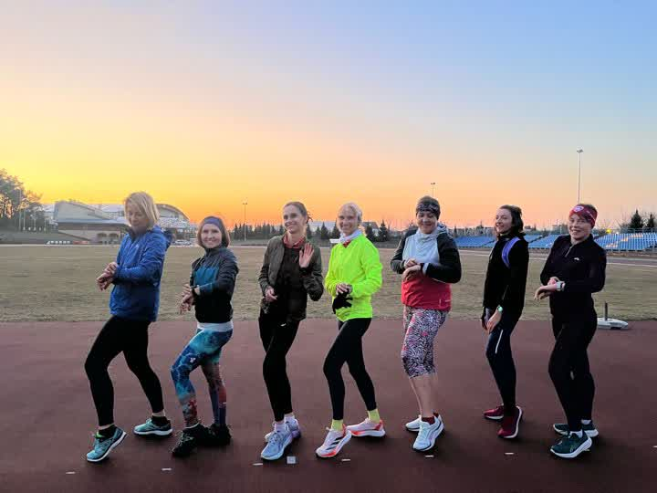

{{POST_TITLE}}
To był wyjątkowy marcowy weekend, który dał nam mnóstwo energii, motywacji i kobiecej siły!
Podzieliłyśmy się na dwie grupy – początkującą i zaawansowaną – tak, by każda uczestniczka mogła trenować na swoim poziomie i w swoim tempie. W planie znalazło się wiele różnorodnych aktywności: poranne rozbiegania wokół jeziora, technika biegowa na płotkach i drabinkach przy zachodzie słońca, a także ćwiczenia sprawnościowe, które poprawiały naszą koordynację, siłę i mobilność.

Nie zabrakło też aktywnej regeneracji – wspólne spacery, rozciąganie, rozmowy i dużo śmiechu sprawiły, że każda z nas mogła złapać balans między wysiłkiem a odpoczynkiem.
Obóz był nie tylko czasem pracy nad formą, ale też chwilą oddechu i prawdziwej kobiecej wspólnoty. Dziękujemy wszystkim uczestniczkom za obecność, zaangażowanie i wspólną atmosferę – takie chwile zostają z nami na długo.
Więcej o naszych wyjazdach przeczytasz na stronie obozy biegowe dla kobiet.